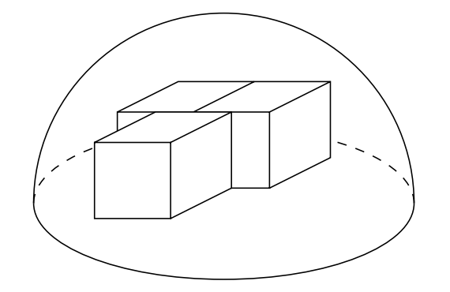

桌面 $z=0$，俯视后方两块合成 $[-2,2]\times[0,2]$、前方第三块 $[-1,1]\times[-2,0]$，顶面高度 $2$。由左右对称设球心 $(0,t,0)$，最远顶面顶点给出 $f(t)=8+(2-t)^2$ 与 $g(t)=5+(2+t)^2$；令二者相等得 $t=\frac38$，$R^2=8+\left(\frac{13}{8}\right)^2=\frac{681}{64}$，故 $R=\frac{\sqrt{681}}{8}$，答案 (C)。
Three $2\times2\times2$ cubes sit on a table so that two of the cubes share a face, and a face of the third cube is centered along a shared edge of the other two cubes, as shown. A hemispherical cover is placed over the cubes so that its circumference rests on the table and the cubes are under the cover. What is the least possible value of the radius of the cover? (A) $3$ (B) $\frac{\sqrt{357}}{6}$ (C) $\frac{\sqrt{681}}{8}$ (D) $\frac{\sqrt{178}}{4}$ (E) $2\sqrt3$
中文翻译：三个棱长为 $2$ 的立方体放在桌面上，其中两个共用一个面，第三个立方体的一个面居中贴在前两个的公共棱上（如图）。用一个半球形罩子罩住它们，罩子的圆周落在桌面上。求罩子半径的最小可能值。 (A) $3$ (B) $\frac{\sqrt{357}}{6}$ (C) $\frac{\sqrt{681}}{8}$ (D) $\frac{\sqrt{178}}{4}$ (E) $2\sqrt3$
📌 答案依据：讲义《2026AMC10A 答案与解析》（用户随附，含答案总表与逐题解析）
讲义给出的正确选项为 (C) $\dfrac{\sqrt{681}}{8}$，本站解析与之一致。
| 常见错误 | 错在哪 |
|---|---|
答 (A) 3 或 (E) 2√3 | 凭直觉把球心放在立方体群的中心或放在桌面中心高度，直接用「最远顶点到原点的距离」当半径，得 $3$ 或 $2\sqrt3$。讲义强调：半球的球心必须在桌面上（圆周落在桌面），不能任意抬高到立方体中心高度；且球心在桌面内仍可沿前后方向平移优化。 |
答 (B) √357/6 或 (D) √178/4 | 只考虑了一组最远顶点（比如只算 $(\pm2,2,2)$ 或只算 $(\pm1,-2,2)$），令 $t=0$ 或某个随意位置就收工，没做「两组距离相等」的极小化。数值上 $\frac{\sqrt{357}}{6}\approx3.15$、$\frac{\sqrt{178}}{4}\approx3.34$，都小于真正的 $\frac{\sqrt{681}}{8}\approx3.26$ 附近的最优值——它们其实小于所需半径，根本罩不住。 |
答 (C) 但过程只验证了一个顶点 | 虽然凑出了正确答案，却只检查了 $(\pm2,2,2)$ 与 $(\pm1,-2,2)$ 两组，没说明其余顶面顶点为何不超过。讲义要求「其余顶点的距离也均不超过此值」，这一步靠球的凸性与逐点验算补全。 |
根本问题：没有把「罩住立体」转成顶面顶点到球心的最大距离的最小化。罩子是凸集，罩住全部顶点就罩住整个立方体；于是三维包络问题降维成二维平面上的极小化。
与官方解法同源：本站方案一与用户随附讲义《2026AMC10A 答案与解析》第 19 题的书面解答同源（本卷官方站尚未收录，讲义即本次权威答案依据）——桌面设为 $z=0$，俯视后方两块合成 $[-2,2]\times[0,2]$、前方第三块 $[-1,1]\times[-2,0]$，所有顶部高度为 $2$；由左右对称可令球心 $(0,t,0)$，最远顶面顶点给出 $f(t)=8+(2-t)^2$ 与 $g(t)=5+(2+t)^2$，令二者相等得 $t=\frac38$，$R^2=\frac{681}{64}$，$R=\frac{\sqrt{681}}{8}$。
本站的增量是补上全部 $10$ 个顶面顶点的距离清单、球心横向偏移的反证、以及棱长 $s$ 的一般化通式。
第 1 步 · 建系并列出顶面顶点。 桌面为 $z=0$，三个棱长 $2$ 的立方体顶面都在 $z=2$。俯视时后方两块并成矩形 $[-2,2]\times[0,2]$，前方第三块为 $[-1,1]\times[-2,0]$。全部顶面顶点共 $10$ 个：
$$(\pm2,0,2),\ (\pm2,2,2),\ (0,0,2),\ (0,2,2),\ (\pm1,-2,2),\ (\pm1,0,2).$$第 2 步 · 球心只能在桌面上，且左右对称。 半球圆周落在桌面 $\Rightarrow$ 球心在 $z=0$ 平面上。整体构型关于 $x=0$ 对称：若球心横向偏移到 $(c,t,0)$，$c\ne0$，则左右成对的顶点中必有一侧更远，最大距离不会变小。故最优球心可设为 $(0,t,0)$。
第 3 步 · 只需盯住两组最远顶点。 到 $(0,t,0)$ 的距离平方为 $x^2+(y-t)^2+4$。最远候选为后方外角 $(\pm2,2,2)$ 与前方外角 $(\pm1,-2,2)$：
$$f(t)=4+(2-t)^2+4=8+(2-t)^2,\qquad g(t)=1+(-2-t)^2+4=5+(2+t)^2 .$$第 4 步 · 极小化最大值。 在 $t\in[0,2]$ 上 $f(t)$ 递减、$g(t)$ 递增，故 $\max\{f,g\}$ 的最小值必在 $f(t)=g(t)$ 处取得：
$$8+(2-t)^2=5+(2+t)^2\ \Longrightarrow\ 12-4t+t^2=9+4t+t^2\ \Longrightarrow\ 3=8t\ \Longrightarrow\ t=\frac38 .$$（讲义同样给出：$t\le\frac38$ 时 $f(t)\ge f\left(\frac38\right)$；$t\ge\frac38$ 时 $g(t)\ge g\left(\frac38\right)$。）
第 5 步 · 求半径并说明凸性。
$$R^2=f\left(\frac38\right)=8+\left(2-\frac38\right)^2=8+\frac{169}{64}=\frac{681}{64},\qquad R=\frac{\sqrt{681}}{8}.$$球是凸集，罩住全部顶面顶点即罩住三个立方体；所有点都在桌面上方，半球条件也满足。
答案：(C) $\dfrac{\sqrt{681}}{8}$。
在 $t=\frac38$ 处逐一算 $x^2+(y-t)^2+4$（写成以 $64$ 为分母）：
| 顶点 | 距离平方 | | --- | --- | | $(0,0,2)$ | $\frac{265}{64}$ | | $(\pm1,0,2)$ | $\frac{329}{64}$ | | $(0,2,2)$ | $\frac{425}{64}$ | | $(\pm2,0,2)$ | $\frac{521}{64}$ | | $(\pm2,2,2)$、$(\pm1,-2,2)$ | $\frac{681}{64}$ |
最大值恰为 $\frac{681}{64}$，且由两组顶点同时达到——这正是「两组等距」的最优结构。任何 $t\ne\frac38$ 都会让其中一组超过 $\frac{681}{64}$。
验证技巧：① $f\left(\frac38\right)=8+\left(\frac{13}{8}\right)^2=\frac{512+169}{64}=\frac{681}{64}$，$g\left(\frac38\right)=5+\left(\frac{19}{8}\right)^2=\frac{320+361}{64}=\frac{681}{64}$，两组相等 ✓；② 数值 $R=\frac{\sqrt{681}}{8}\approx3.262$，大于干扰项 $\frac{\sqrt{357}}{6}\approx3.150$ 与 $\frac{\sqrt{178}}{4}\approx3.336$ 中的前者、小于后者，符合「必须同时罩住两组」的约束；③ 讲义指出球为凸集，罩住全部顶点即罩住立方体；④ 顶面顶点共 $10$ 个，逐一验算距离平方均不超过 $\frac{681}{64}$ ✓。
核心知识点：把「半球罩住立体」转成顶面顶点到球心的最大距离的最小化（球是凸集，顶点足够）；球心受「圆周落在桌面」约束，只能取 $(0,t,0)$。
必须掌握的要点：
列出全部 $10$ 个顶面顶点，并在 $t=\frac38$ 时逐一算出到球心 $(0,\frac38,0)$ 的距离平方，指出最大值及达到它的顶点。
见方法二表格。例如 $(0,0,2)$ 给 $0+\frac{9}{64}+4=\frac{265}{64}$；$(\pm1,0,2)$ 给 $1+\frac{9}{64}+4=\frac{329}{64}$；$(0,2,2)$ 给 $\frac{169}{64}+4=\frac{425}{64}$；$(\pm2,0,2)$ 给 $4+\frac{9}{64}+4=\frac{521}{64}$；后方外角 $4+\frac{169}{64}+4=\frac{681}{64}$，前方外角 $1+\frac{361}{64}+4=\frac{681}{64}$。
要点：完整列举是 minimax 结果最硬的验收；两组顶点同时取到最大值，说明 $t=\frac38$ 确实无法再改进。
把立方体棱长改为 $s=1$（后方两块并成 $[-1,1]\times[0,1]$，前方为 $[-\frac12,\frac12]\times[-1,0]$，顶面高度 $1$），求最优球心位置与最小半径。
两组最远顶点给 $f(t)=2+(1-t)^2$、$g(t)=\frac54+(1+t)^2$。令相等得 $2+1-2t+t^2=\frac54+1+2t+t^2\Longrightarrow \frac34=4t\Longrightarrow t=\frac{3}{16}$。$R^2=2+\left(\frac{13}{16}\right)^2=\frac{512+169}{256}=\frac{681}{256}$，$R=\frac{\sqrt{681}}{16}$。
要点：整个问题关于 $s$ 线性缩放；$t$ 与 $R$ 都按 $s$ 成比例，数值验证 $s=2$ 时 $t=\frac38$、$R=\frac{\sqrt{681}}{8}$ ✓。
把球心改为 $(c,\frac38,0)$ 且 $c=\frac12$，计算最远顶点的距离平方，说明它是否比 $c=0$ 更优。
取 $c=\frac12$，顶点 $(-2,2,2)$ 给 $\left(-2-\frac12\right)^2+\left(\frac{13}{8}\right)^2+4=\frac{25}{4}+\frac{169}{64}+4=\frac{400+169+256}{64}=\frac{825}{64}\approx12.89$，大于 $c=0$ 时的 $\frac{681}{64}\approx10.64$。一般地横向偏移 $c\ne0$ 会使左右成对顶点中一侧的 $(x-c)^2$ 增大，且无法让另一侧同步减小，故最大值必不减。
要点：对称性是「可设 $c=0$」的依据，不是想当然；用一次具体偏移反证即可坐实。
对任意棱长 $s>0$，证明最优球心 $t=\dfrac{3s}{16}$、最小半径 $R=\dfrac{s\sqrt{681}}{16}$，并验证 $s=2$ 回到原题。
顶面 $z=s$，后方外角 $(\pm s,s,s)$ 给 $f(t)=2s^2+(s-t)^2$，前方外角 $(\pm\frac{s}{2},-s,s)$ 给 $g(t)=\frac{5s^2}{4}+(s+t)^2$。令相等：$3s^2-2st=\frac{9s^2}{4}+2st\Longrightarrow \frac{3s^2}{4}=4st\Longrightarrow t=\frac{3s}{16}$。于是 $R^2=2s^2+\left(\frac{13s}{16}\right)^2=\frac{681s^2}{256}$，$R=\frac{s\sqrt{681}}{16}$。代入 $s=2$ 得 $\frac{2\sqrt{681}}{16}=\frac{\sqrt{681}}{8}$ ✓。
要点：先做量纲分析：所有长度按 $s$ 缩放，故 $t\propto s$、$R\propto s$ 是必然的；剩下只需定出两个无量纲系数。
证明在 $t\in[0,2]$ 上 $f(t)$ 严格递减、$g(t)$ 严格递增，并由此说明 $\min_t\max\{f(t),g(t)\}$ 必在 $f(t)=g(t)$ 处取得；再说明为何「罩住顶点」就够了。
$f'(t)=-2(2-t)\lt 0$（$t\lt 2$），$g'(t)=2(2+t)>0$（$t>-2$），故在 $[0,2]$ 上 $f$ 降、$g$ 升。若 $t\lt \frac38$，则 $\max\{f,g\}\ge f(t)>f\left(\frac38\right)=\frac{681}{64}$；若 $t>\frac38$，则 $\max\{f,g\}\ge g(t)>g\left(\frac38\right)=\frac{681}{64}$。故最小值只能在 $\frac38$ 取到。又因球体（及半球）是凸集，而立方体是其顶点的凸包，罩住全部顶点即罩住整个立方体；所有顶点 $z=2>0$ 且在球内，满足半球条件。
要点：minimax 的「交点即最优」需要单调性作证，不能只凭直觉；凸性则把无限多个点压缩成有限个顶点。
口诀：「球心贴桌面，左右取对称；一降一升令相等，顶点清单收半径」。